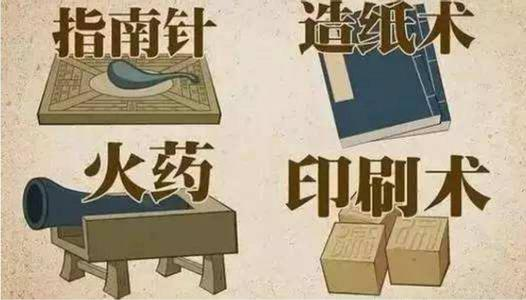
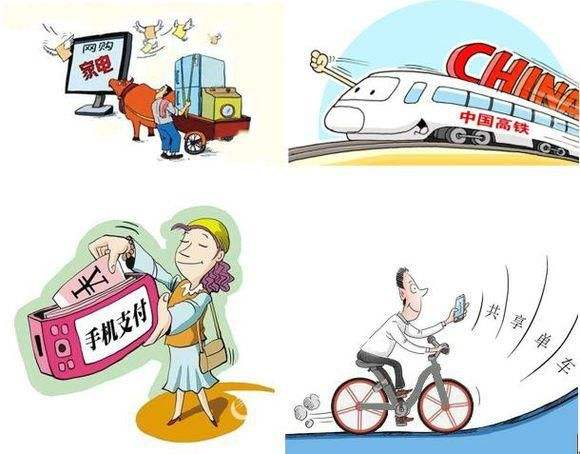
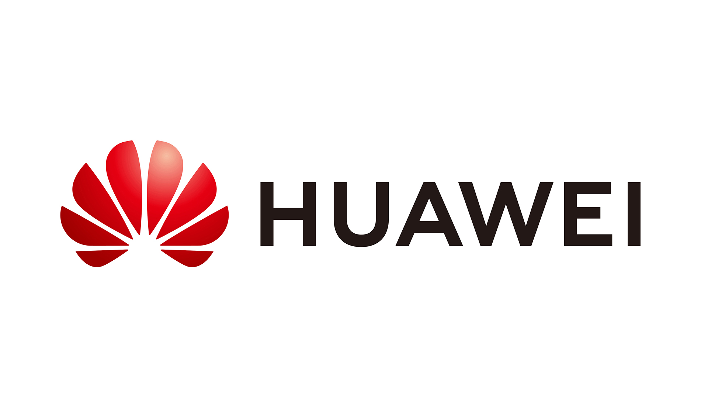

中国古代四大发明
2007年，英国《独立报》评出了改变世界的101个发明。中国的四大发明：造纸术、印刷术、指南针、火药及另一发明算盘赫然在列

袁隆平
1960年袁隆平从一些学报上获悉杂交高粱、杂交玉米、无籽西瓜等,都已广泛应用于国内外生产中.这使袁隆平认识到：遗传学家孟德尔、摩尔根及其追随者们提出的基因分离、自由组合和连锁互换等规律对作物育种有着非常重要的意义.

让非遗文化不再孤独，科技助还原！
2019年开年的“紫禁城里过大年”以新技术复苏旧年月，以数字技术、虚拟影像、动作捕捉等科技手段，呈现出了紫禁城的年节文化。“紫禁城上元之夜”的灯光惊艳了世人，利用高科技向人们展示的虚拟现实影片《千里江山图卷》等让公众沉浸其中，感受了一番别有不同的节庆味、人情味。

于敏：中国氢弹之父
于敏，蘑菇云下的盖世英雄，是他让氢弹成为了“中国关键词”。从1961年开始，他隐姓埋名28载，进行氢弹理论探索工作，提出了从原理到构形基本完整的设想，仅用26个月就带领科研团队取得了氢弹试验的成功，创下了世界最短的研究周期记录。

刘永坦：用雷达筑就“海防长城”
刘永坦院士出生于1936年，在那个动荡的年代，炮火席卷中华，山河零落，他的亲人希望孩子能拥有一个平安通坦的未来，便取名“永坦”。但他的人生并非一帆风顺，坎坷未曾缺席，不过多少波折，他都始终坚定脚步，为少时立下的报国志愿而奋斗。

21世纪中国“新四大发明”，你知道吗？
一千年前，“四大发明”的问世，大大促进了社会文明的进程。近来，来自二十多个不同国家的外国朋友票选出了心中的“中国新四大发明”。

第二个“袁隆平”经多年研究他在沙漠种植大片水稻，各国惊呼逆天
袁隆平，无人不知无人不晓，中国杂交水稻育种专家，中国研究与发展杂交水稻的开创者，被誉为“世界杂交水稻之父” 特别是在今年的疫情期间，90岁的袁隆平院士与84岁的钟南山院士更是被喻为我们的“医食父母”。

杨璐菡：“基因剪刀手”
有数据显示，全世界约200万人需要器官移植，但全世界有器官移植需要的病人却远远超出所捐献的器官数量，器官移植已成为全球困境。许多科学家致力于解脱这一难题，而杨璐菡也属于其中一位。

华为的创新之路
过去20多年全球通信行业的最大事件是华为的意外崛起，然而，令人纳闷的是，“创新”一词在华为的“管理词典”中却不多见，这一切背后到底反映着什么样的企业哲学观和故事？

张铭志：毕生追求科技创新和医术传承
人物简介：张铭志，汕头大学·香港中文大学联合汕头国际眼科中心的常务副院长。曾获得中美眼科学会金苹果奖、“亚太眼科学会防盲杰出贡献奖”“亚太眼科学会成就奖”“全国巾帼建功标兵”“汕头市2019优秀科技工作者”等荣誉称号，入围《中国名医百强榜》眼科榜单。在国内外知名眼医学期刊发表论文215篇，其中被SCI收录论文116篇，共计培训眼科界优秀人才4000余人，荣获第二届全国创新争先奖。